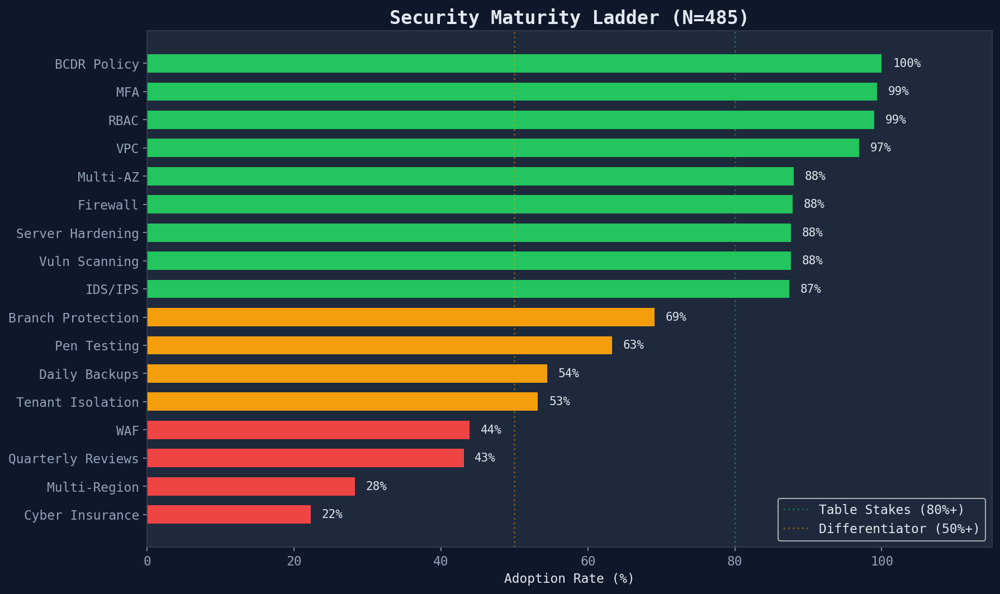
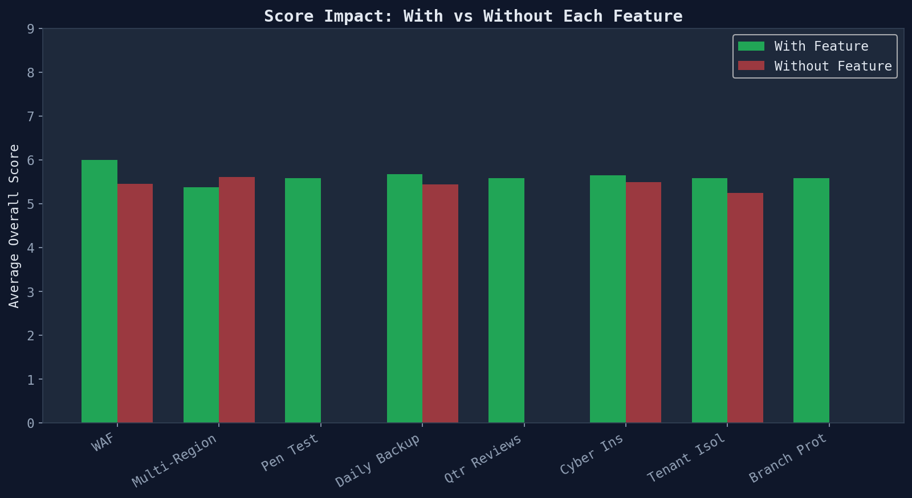

The Security Maturity Ladder
Security maturity across 485 companies follows a clear three-tier pattern.
The gap between tiers defines investment risk and opportunity.

Green = table stakes (80%+), Yellow = differentiator (50%+), Red = rare (<50%)
Tier 1 — Table Stakes (80%+ adoption)
These features are near-universal and provide no competitive differentiation:
- MFA (99%) — multi-factor authentication is baseline
- RBAC (99%) — role-based access control
- VPC (97%) — network isolation
- Multi-AZ (88%) — availability zone redundancy
Tier 2 — Differentiators (40-80%)
These features separate the middle of the pack from the top:
- Branch Protection (69%) — prevents direct pushes to production
- Pen Testing (63%) — annual external penetration testing
- Daily Backups (54%) — regular data protection
- WAF (44%) — web application firewall
Tier 3 — Advanced (Under 40%)
These features predict the highest scores and indicate genuine security investment:
- Multi-Region (28%) — geographic redundancy
- Cyber Insurance (22%) — financial risk transfer
- Quarterly Reviews (43%) — regular access audits
Feature Impact on Score
Companies with advanced features consistently score higher than those without.
The biggest score differential comes from multi-region deployment and WAF.

Green = with feature, Red = without
Investment signal: When evaluating a company, check for Tier 2 and Tier 3 features. A company with WAF + multi-region + quarterly reviews is in the top 5% of the portfolio.
Feature Count Predicts Score
There is a clear positive correlation between the number of security features
adopted and the overall tech DD score.
For PE value creation: The cheapest way to move a portfolio company up a tier is to add WAF (one-day implementation via Cloudflare/AWS) and establish quarterly access reviews (process change, no cost).
Generated from security maturity module · 485 SOC 2 compliance reports · 2026-03-24